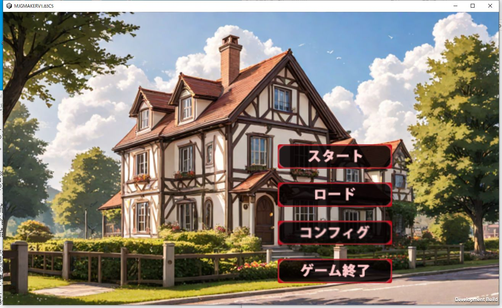

|
前回まででボタンの設定等をやりましたが、今回は前回の最後と同じく、起動画面の変更をやります まずは画面サイズ。実は今回収録されている画像の基本サイズは1280x768の大きな画像なのですが、設定としては今までと同様のサイズのままなので、折角の画像サイズがもったいないです。 そこで、画像サイズに合わせた画面の大きさに変更します。 ConfJSを開いてください "screenWidth":"640", "screenHeight":"360", という部分がありますがこちらが画面サイズの設定になっています。 そこで、こちらを1280と768に変更します |
"screenWidth":"640", "screenHeight":"360", "fullscreen":"false", |
|
さて、画面サイズを変更すると、絵にあう大きさのゲーム画面になったと思います。 ですが、そのままだとボタンが小さくて使いづらいので、画面サイズに見合ったボタンの画像を設定します Pictureに、300x63の画像サイズのボタンが4つあるので、そちらを指定してあてはめます。 それぞれ、コンフィグ、ロード、スタート等に対応しています。 それを、右の文のような感じで直接指定して使います。 ボタンのサイズは画像サイズが直接使われるので、適切な大きさのボタンを作ってください |
"LoadS":"true,,460,100", "LoadSG":"BTLOADL.png", "ConfigS":"true,,460,0", "ConfigSG":"BTCONFL.png", "GMEnd":"true,,460,-100", "GMEndG":"BTENDL.png" |
|
実際にやってみて、画像サイズに合ったボタンが表示されればOKです。 大きな画像の物を作る場合はこの形でやってみてください。 |  |
|
今回の物で応用編も終了となります。ボタン等をやったので色々と細かいフラグなども立てられるようになりました。 一通り、応用編も終わったので、今までの分のファイルをまとめたものを置いておくので参考にしてみてください。 | |